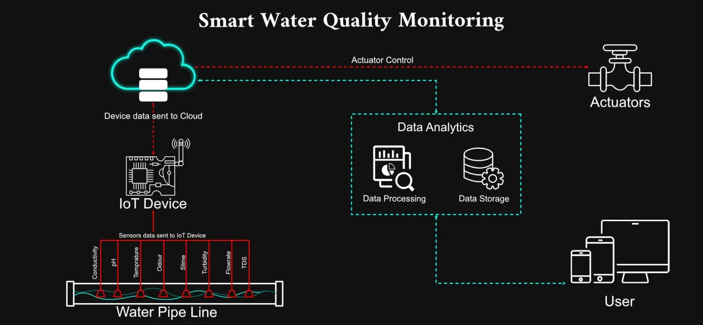
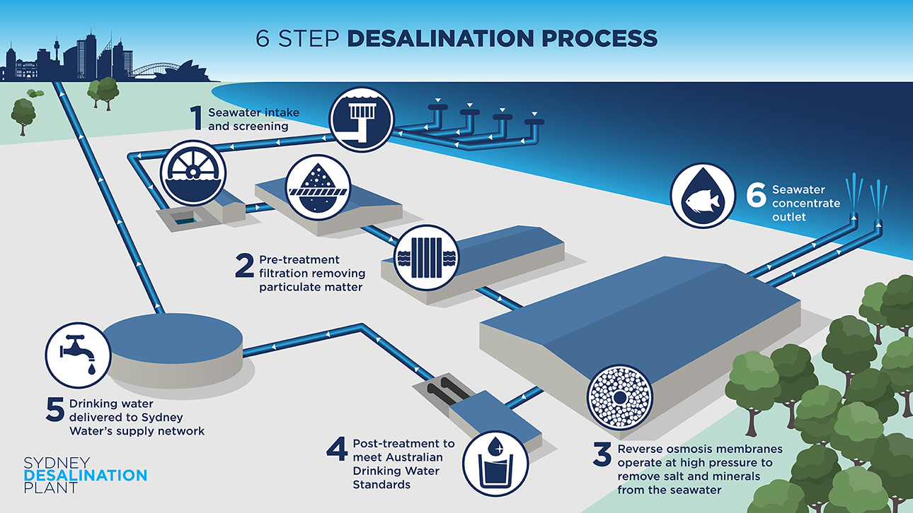

The complete water management system where first stage is water quality monitering of water bodies.Next stage being Water Treatment Plant where water is purified and would be made fit to use finally water quality and quantity monitering than Metering sysytem to track water usage.


Sensors detects specific water quality aspects we want to monitor, such as pH, temperature, turbidity, or dissolved oxygen. The sensors collect data and transmit it to a central unit. In an IoT system, sensors connect wirelessly to transmit data over the internet for remote monitoring. The central unit stores and analyse the collected data.
The process of removing salt from seawater, is becoming increasingly important as freshwater resources become scarce.Desalination Plant uses reverse osmosis technology. Water from the Plant is monitored and treated throughout the entire process to meet Drinking Water Guidelines, which makes it among the best in the world.
